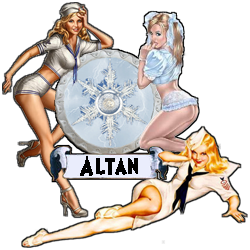

|

|
Das schwarze Brett
|
|
| Übersicht,
Vorschläge |
|
System/Engine/Technisches - Abreissen von Stadtausbauten (3  ) )
|
Kittin Silberfang
 |
So ist es momentan:
Ist ein Stadtgebäude auf eine gewisse Stufe ausgebaut, so muss man um diese Ausbauten zu entfernen bei jeder Stufe
1.) Das Gebäude im Drop-Down Menue suchen
2.) Einen Ausbau abreissen
3.) Es wird aktualisiert und man beginnt wieder bei 1.)
So soll es werden:
Man kann die Anzahl der abzureissenden Ausbauten ebenfalls per Drop-Down Menue auswählen. Vgl.: Entlassen von Armeeeinheiten
Vorteile für das Spiel:
Zeitersparnis, kein Verklicken und versehentliches abreissen von anderen Ausbauten
Nachteile für das Spiel:
Wüsste ich nun keine
Mögliche Problematiken:
Wüsste ich ebenfalls keine
Sonstiges:
Im Vgl. zu der Einheitenentlassung sollte es aber die Möglichkeit geben, alle Ausbauten abzureissen, da es ein Gebäude mit 0 Ausbauten ja geben kann. |
13.09.09 14:50
 |
|
Galaton Dragus
 |
Könnte von mir sein, und würd ich gern erweitern um keinen Historieneintrag bei einem Komplettabriss ;) |
13.09.09 23:04
|
|
| Hrogar Bierbrauer (RIP) |
Guter Vorschlag von Kittin, uneingeschränkt dafür. |
13.09.09 23:26
|
|
| Falster von Distelflamme (RIP) |
habt euch mal ned so...musste mancher hier scho oft machen *hust*
was uns nicht umbringt macht uns härter! |
14.09.09 1:21
|
|
Altan Stormwind
 |
nur weil es schon mancher machen musste, heißt das doch nicht, dass man es nicht verbessern sollte ;)
Also ich bin auch dafür! |
14.09.09 10:22
|
|
Übersicht,
Vorschläge
|
|
|
|